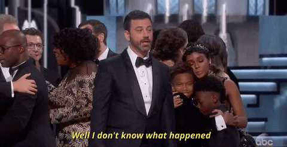
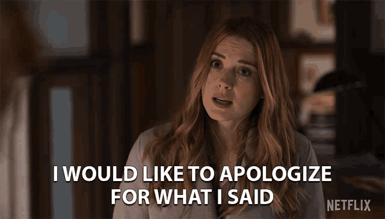
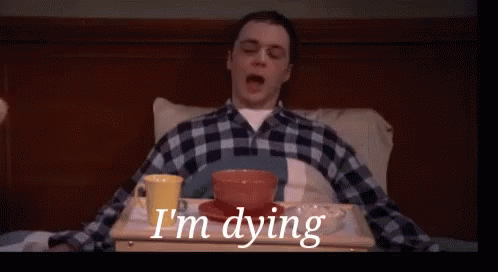
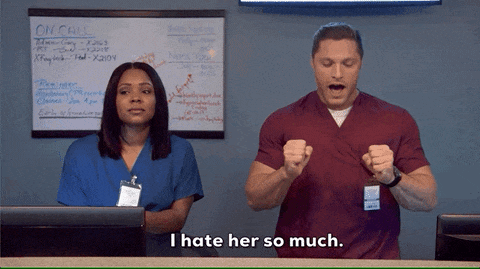

Hey, Yo Demi-God, wasssuppp!! This is your sick friend (sick: Unhealthy lol)
First of all, Don't freak out!! I couldn't talk to you while I was at berhampur and you were busy and I need to vent out immediately!.. so wrote this up.. I know it's normal!! LOL
I tried to make it funny!! So Laugh dudee!! LOL
Don't throw big names around .. Holy Zeus!!(*Thunder Crackling*)
I wish I had read enough to come up with better references LOL!
I seriously don’t know who the hell that guy in the background is.. But he looks kind of like eddie redmaine though…
Ahh, I know the music in the background is annoying, if you remember I have the worst taste in music. TIME BOMB!! BOMB!! BOMB!! TIME BOMB!!
Dude.. what happened after friday( november 4th 2022). On friday, you were so normal we went for lunch at riverdale and you said "niceee" when I had three rotis!! and you even came to the lab before leaving for the bus, I bragged to ashwin about this too, which now that I think about is a bad idea... Because he said it will never go back to normal, and I told him it will. I seriously don’t know what happened to you on saturday (November 5th)...
I waited like 45 mins for you to come for lunch, but you did not call me and left, which was a bit weird(I know its petty, but still I didn’t have an umbrella dudeee)

So, I didn’t know whom to ask about what happened to you, and I thought asking you will be scary.. You do have a pretty scary look, I mean not like that monster Miss Dodds from percy jackson but still scary!!!….
Ohh btw.. That friday and saturday I was asking you to stay is not because I wanna start some discussion and make things awkward again.. I was so happy when you told me in the text I am your best friend and your person… So, i wanted to apologize for what I have done that day… but you never gave me time either days, I really wanted to tell you this soon and in-person but never got the chance (because of my stupid health and my stupid White blood cell count)..

My health situation was horrible on sunday. A senior saw me almost getting unconscious after vomitting and took me to MKCG and I was not even walking properly
after getting the drip. All because I had shawarma from a new place that Harshit recommended near old bus stand(Stupid harshit!, He asked me if it's worth it).
I couldn't have anything except for bread and jam so I went back home immediately. Ashwin is really sweet, he agreed to accompany me for the journey.
And after coming back I couldn't focus on my preparation, so I was shit scared I am gonna fuck up my grades, and immediately started the medical leave process.
I remember you calling me the next day, but I was so sick I cannot even recall what we talked about.

And also I forgot to say that day on the call when I asked you to cancel tickets, After I went home for the first time, my parents asked me to do the IIT Madras internship
online. So I thought I would write my end sems normally and go to chennai for three days to meet with the PI and come back to my home by
December 6th. Then I cancelled because of my make-up exams and It makes no sense to go and stay there for just 3 days..
I am very sorry that I annoyed you a lot on saturday while you were leaving in the bus (I mean I called you three times which is very weird!!!!) If men have a menstrual cycle, then that is my day of the month LMAOOO.. And the before day too when you had plans with madhusmitha. You were so nice to me, that you came that day and had a chat with me in the lab while waiting for the bus…
I was such a weirdo, I asked you to reschedule it. I told you right, it's like just before my day of the month!!
On the side note, couple of things about madhusmitha.. I HATE HERRRR!! I know its very very petty.. It felt like she’s stealing my friend that day.. I am a tad bit possessive when it comes to close friends..lol.. Again petty but still… That’s why I pissed her off loll… But It's all in good spirit..

Again after I am back I thought you'll meet me. So I waited in the lab, but you never did.
But I was so happy when you texted me reminding that I didn't answer about how my health situation is.
I thought things are normal again, but I am fooling myself, I am still suspicious....